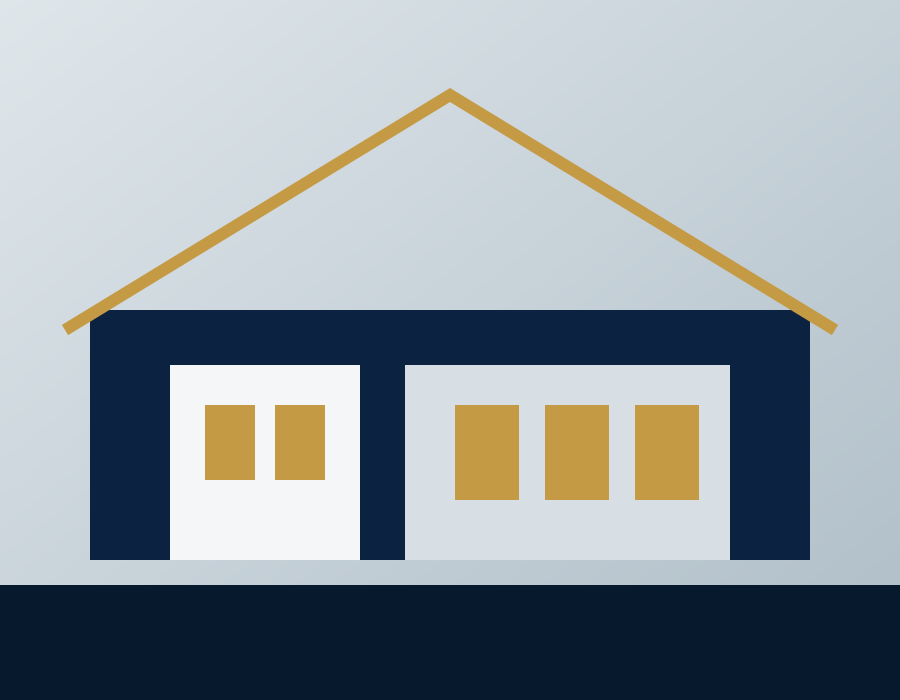
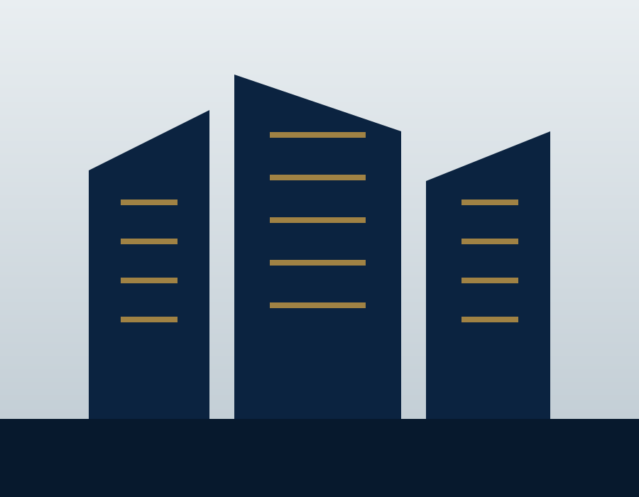
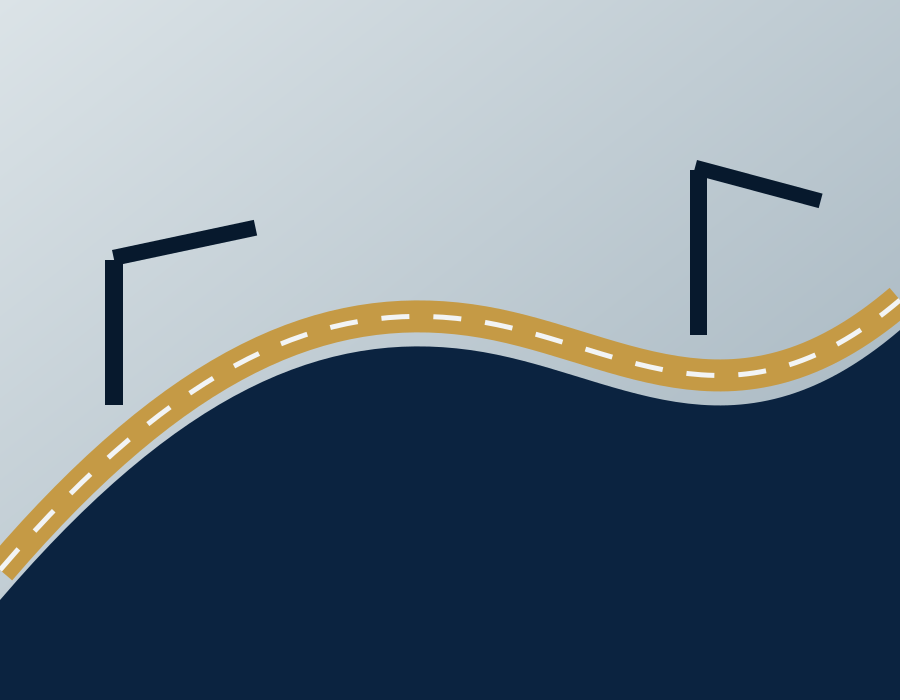

01
Engineering Consultancy
Design and technical coordination across the project lifecycle.
- Architecture & multidisciplinary coordination
- Technical documentation & specifications
- BOQ, tender and construction support
Dubai · United Arab Emirates
Integrated engineering consultancy, project management and digital solutions for the built environment.
About KANZ AL WADI
KANZ AL WADI Management Consultant L.L.C. is a Dubai-based consultancy focused on engineering coordination, project management, project controls and digital enablement.
Our structure is intentionally multidisciplinary. Design, planning, reporting and technology are treated as connected parts of project delivery—not as isolated services.
Our delivery approach →Core capabilities
Each service line can grow as the company portfolio develops, without changing the structure or identity of the website.
Design and technical coordination across the project lifecycle.
Structured planning, controls and reporting focused on delivery.
Practical technology supporting consultancy and decision-making.
Sector focus
Our consultancy structure is designed to support a focused range of building and infrastructure sectors as the portfolio develops.

Design coordination, planning and project delivery support.

Multidisciplinary consultancy and management capability.

Planning, coordination and project-controls support.
How we work
Clarify scope, stakeholders, constraints and delivery priorities.
Translate objectives into coordinated plans, roles and controls.
Maintain visibility through practical reporting and issue tracking.
Use lessons, data and technology to strengthen delivery outcomes.
Digital capability
Digital solutions and AI are integrated where they improve speed, consistency, visibility and decision-making. They support professional judgement; they do not replace it.
Discuss a digital requirement →Contact
Official contact channels are currently being finalized. This section will be activated as soon as the company email and telephone details are confirmed.